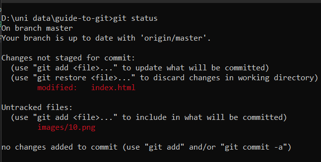

go to the git website
find your operating system and click download

-
click on new
-
Add name of the Repository, description and visibility and scroll down and click on Create
-
An empty project will be created and a url will be provided to access your Repository
-
copy the URL
-
Open command Prompt in the drive you want to clone the project and write the following command along with the URL, press enter
-
Repository will be cloned into your drive
-
Open VS code by typing "code ." in the cmd while being in the cloned folder
-
Your project will be opened in the vs code now you can create edit or delete any file as you like.
-
Now that you have edited your files, you can see the git icon with a badge indicating that you have some uncommited changes in your project
-
To commit your changes you have to perform the following steps, open Command Prompt and type "git status",It will tell you about all the files that have been modified and not commited
 -
To commit these files you have to first stage them to be commit type "git add ." to stage all the files